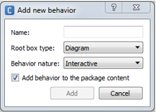

Choregraphe 2.3.0¶
Behavior has evolved¶
New: Root box type¶
Behaviors used to contain a Flow diagram as a root box type, now it can also contain directly a Timeline.
The Root box type is now requested when creating a new Behavior.
{kind=link}
TODO, see: Behavior.
New properties: Permissions¶
Permissions allows you to define the permissions needed for the launching of the Behavior:
- If the field “Behavior can be run on charging station” is not checked, you will not be able to launch the Behavior while the robot is on his Charging station.
- A new field has been added to choose whether an Activity may start on user request.
For further details, see: Behavior property list.
Usability¶
New panel: Project objects¶
Project objects panel shows the complete boxes tree of the current Behavior. It eases the navigation from a box level to another, and also provides a search field to find boxes by name.
For further details, see: Project objects panel.
New panel: Active content¶
Active content panel lists running Behaviors, Services and Dialog topics. It gives the possibility to stop and restart them, and keeps a brief history of the last active contents.
For further details, see: Active Content panel.
New panel: Inspector¶
Inspector panel gives a centralized view of main objects in Choregraphe: Behaviors, Boxes in the diagram and in box library, applications.
Note: The Limb properties also appears in the inspector.
Note: if you select a pure animation box, the Inspector shows a 3D preview of the animation.
For further details, see: Inspector panel.
Improved panel: Box library¶
Box library has been completely reworked:
- a more intuitive tree structure,
- no more tabs, even for user’s box library,
- search filter has been improved,
- box properties are now displayed through the Inspector panel.
Improved panel: Robot applications¶
Robot applications now displays Behaviors, Dialogs and Services.
Better display¶
- Clearer Behavior loading indication bar.
- When linking boxes, inputs and outputs names are displayed.
- Trigger conditions edition offers auto-completion, syntax highlighting and syntax checking.
- New stand-alone condition editor.
Language¶
Supported Languages¶
New languages are supported in the Dialog.
For further details, see: Supported languages.
New Choice box¶
Choice boxes are much more efficient and are compatible with dialogs, you are encouraged to replace them!